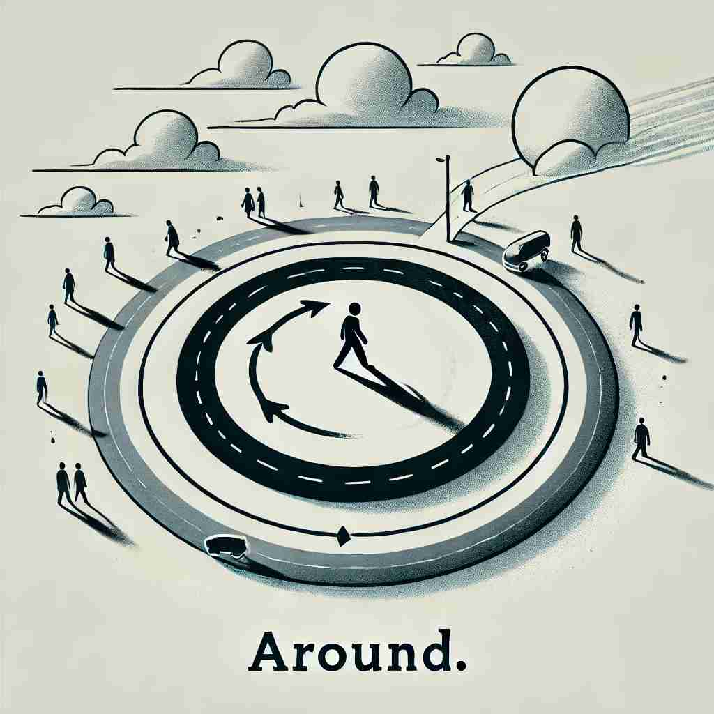

💬 The children sit around the fire, roasting marshmallows.

💬 The Earth orbits around the sun in space.

💬 The man likes to walk around the roundabout every morning.
💬 The friends decided to gather around together in the circle.
🔈 [ə'raʊnd]
🗝️ adv./prep. in a circular or curved movement, or position close to something
🖼️ 在一个游乐场里，小朋友们正围着一个圆形的旋转木马开心地跑动。他们沿着木马's围绕'的轨迹，展现了'around'表示圆周或弯曲移动的含义。
🔍 想象一个圆，'around'的核心含义就是围绕这个圆的运动或位置。从这个核心概念，我们可以理解它如何延伸到表示'周围'、'到处'、'大约'等含义。记住这个圆的图像，可以帮助你联想和记忆'around'的各种用法。
💬 The children sit around the fire, roasting marshmallows.
💬 The Earth orbits around the sun in space.
💬 The man likes to walk around the roundabout every morning.
💬 The friends decided to gather around together in the circle.
🌳 由基本词 'round'（圆形，周围）加上前缀 'a-'，表示 '围绕...四周，周围'。前缀 'a-' 在此处起到方向性或位置的作用。
💡 记忆 'around' 时，可以想象一个圆圈，把某个中心点包围在中间，强调 '四周围绕' 的感觉。这样可以更好地联想出 '围绕' 的意义。
🗝️ prep. on every side; surrounding
🖼️ 想象一个树林中的小木屋。小木屋的四周被高高的树木所环抱，树木's每一侧'环绕着房子，呈现了'around'作为包围四周的含义。
💬 There are trees around the lake.
❓ 从圆周运动延伸到周围所有方向
🗝️ adv./prep. in or to many places in an area
🖼️ 在一个热闹的市场中，一位小贩推着他的手推车's在市场周围'来回走动，兜售着新鲜的水果，不断地来到不同的地方，演示了'around'表示在某个区域的多个地方之意。
💬 We drove around the city looking for a parking space.
❓ 从环绕延伸到在某区域内到处移动
🗝️ adv. approximately
🖼️ 在一个正式晚会上，一位客人询问主持人活动开始的时间。主持人看了看手表，然后微笑着回答：'大约'晚上7点左右。'around'在这里传达了一个'接近或大概'的时间。
💬 It costs around $50.
❓ 从环绕的概念引申为接近某个数值
🗝️ adv. in existence or available
🖼️ 在一个舒适的咖啡馆里，有位顾客抬起头问服务员：'这里有无线网络吗？' 服务员点头微笑道：'当然，这里'始终有'无线网络信号。'这展示了'around'表示'存在或可利用'的情境。
💬 Is there a doctor around?
❓ 从"在周围"引申为存在或可用
🗝️ adv. to a new position or direction
🖼️ 傍晚时分，一位慢跑者在公园跑道的一个转弯处改变方向。他'绕到'了弯道的另一侧，继续跑向新的方向，强调了'around'用于表示改变位置或方向。
💬 She turned around to face me.
❓ 从圆周运动引申为改变位置或方向